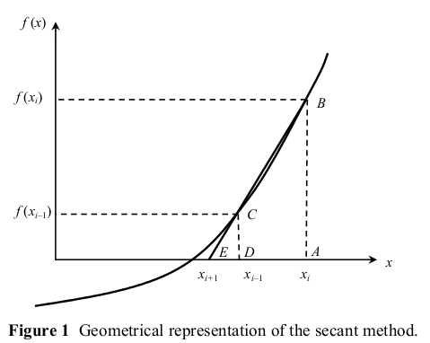

Week.10 : R 언어를 이용한 수치(개방법) Numerical Methods with R (Open Method)
Table of ContentsR 언어를 이용한 수치(개방법) : Numerical Methods with R (Open Method)
개방법 Open Methods
비선형방정식에서 반복계산을 통해 근을 구하는 방법 (특히, 고차 대수방정식, 초월함수).
- 특정한 구간 없이 한 개의 초기값에서 시작하여 해를 찾는 방법.
- 수렴성이 항상 보장되지는 않음.
- 수렴속도는 구간법에 비하여 빠름.
Numerical Methods with Applications(2011) 부교재에 다음의 개방법이 소개되어 있다.
- BisectionMethod
- Newton-Raphson Method
- Secant Method
- False-Position Methos
이 중 보편적으로 많이 쓰이는 할선법(Secant Method)을 예제로 다루어본다.
할선법 Secant Method
할선법은 Newton-Raphson 방법을 수정한 것이다.
할선법은 Newton-Raphson 방법을 수정한 것이다.
NR에서는 다음 해를 다래와 같은 반속식으로 산정한다.
(1)
도함수는 다음과 같이 근사할 수 있다.
(2)
식(2)를 식(2)에 적용하면 다음과 같이 나타낼 수 있다.
(3)
위의 식을 할선법(secant method)이라 부른다.

수렴오차, 허용오차, 도함수허용오차, 최대반복수 그리고 초기값을 설정해 줘야 한다.
예제 : 사다리꼴 단면에서의 등류수심 Example : Normal depth in a prismatic channel
사다리꼴 개수로 단면에서 등류수심을 구하는 예제를 통해 할선법을 활용해 본다.
예제 출처 : Ponce. onlinecalc [Link]

Q : 유출량 Flow discharge input
b : 바닥폭 Bottom width input
z : 측면경사 Side slope input
S : 수로경사 Bottom Slope input
n : 조도계수 Manning’s n input
k : Unit constant (k=1) input
A : 단면적 Area
P : 윤변 Wetted perimeter
R : 동수반경 Hydraulic radius
yn : 등류수심 Normal flow depth output
R Example Code
# secont method -----------------------------------------------------------
# 사다리꼴 개수로에서 등류수심 구하는 예제
# q : 유출량 Flow discharge input
# btmW : 바닥폭 Bottom width input
# z : 측면경사 Side slope input
# s : 수로경사 Bottom Slope input
# n : 조도계수 Manning’s n input
# a : 단면적 Area
# p : 윤변 Wetted perimeter
# r : 동수반경 Hydraulic radius
# d : 수리심 Hydraulic depth
# y : 등류수심 Normal flow depth output
# input -------------------------------------------------------------------
q <- 10
btmW <- 10
z <- 2
s <- 0.001
n <- 0.013
ae <- 0.0005 # allowable error
de <- 0.00000000001 # derivated error
loopMax = 3000 # maximum possible loop
init = 1/10 # initial value
# function ----------------------------------------------------------------
f <- function(y,q,b,z,s,n){
a <- y*(b+z*y)
p <- b+2*y*(1+z^2)^(1/2)
r <- a/p
fx <- 1/n*a*r^(2/3)*s^(1/2)-q
return(fx)
}
x1 <- init # defining initial value
# iteration ---------------------------------------------------------------
for (i in 1:loopMax){
xc <- x1+ de #
fx1 <- f(y = x1, q = q, b = btmW, z = z, s = s, n = n )
fxc <- f(y = xc, q = q, b = btmW, z = z, s = s, n = n )
df <- (fx1-fxc)/(x1-xc)
x2 <- x1 - fx1/df
e <- abs((x2-x1)/x2)
if(e<ae){
fin <- x2
break
}
x1 <- x2
fin <- x2
}
# output
out.y <- fin
out.a <- fin*(btmW+z*fin)
out.p <- btmW+2*fin*(1+z^2)^(1/2)
out.r <- out.a/out.p
결과
out.a : 6.43
out.p : 12.58
out.r : 0.511
out.y : 0.577
Reference
- Autar K Kaw(2011). Numerical Methods with Applications, 2nd Edition [Down] [Link]
- 김창호. 수치해석이란 무엇인가? [Link]
- Ponce. Onlinecalc [Link]